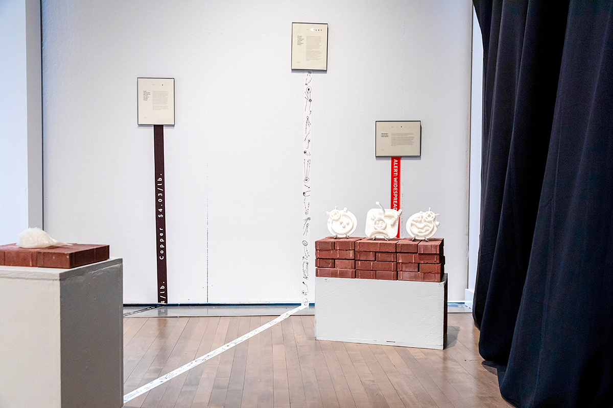
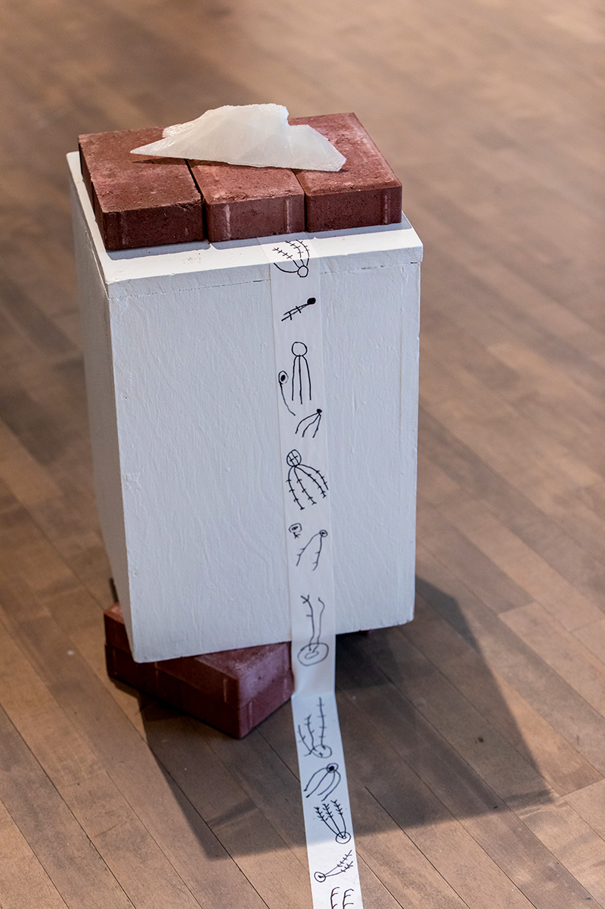
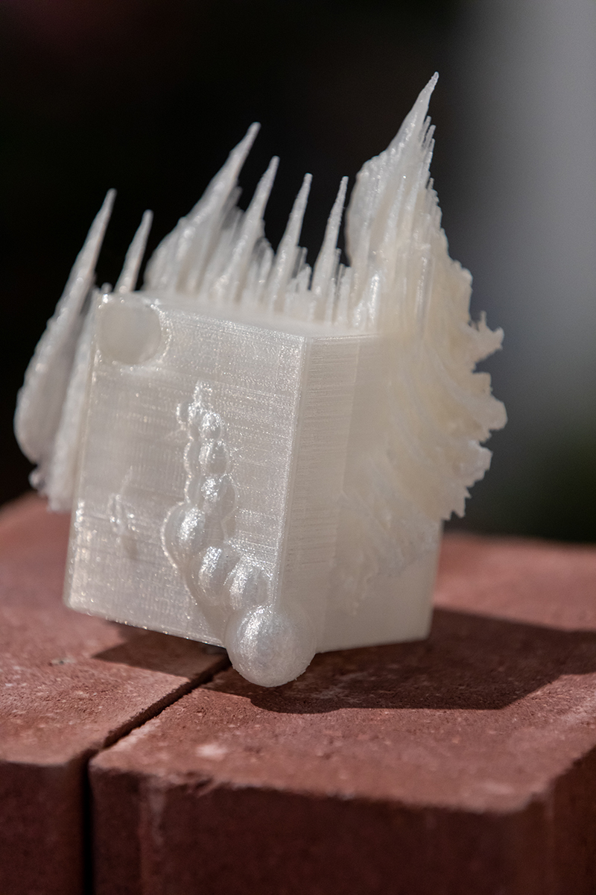
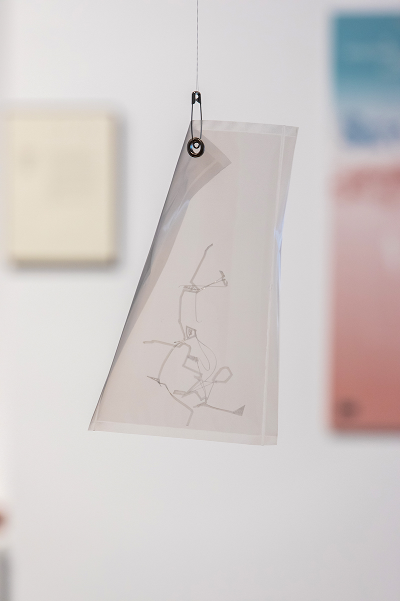
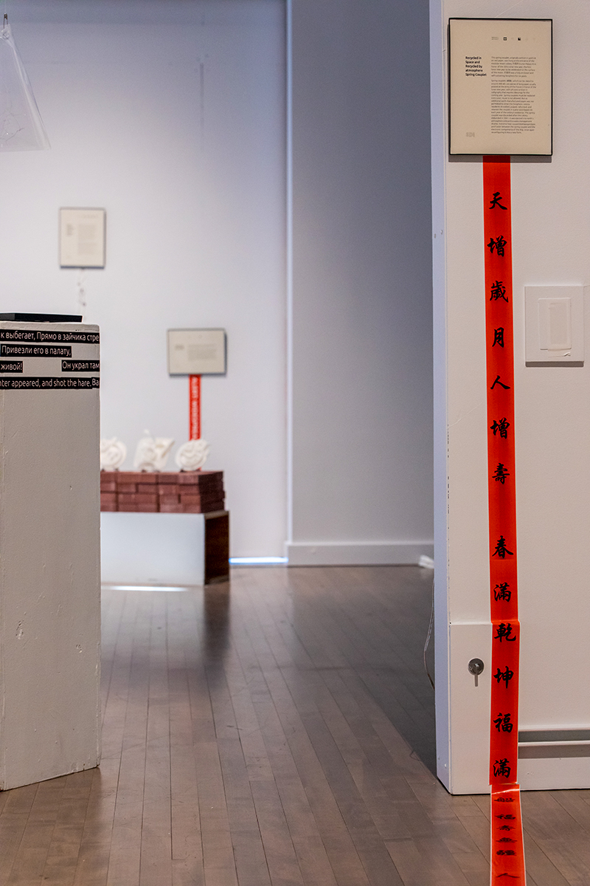

In this project, I collaborated with archivist Becky Alexander to explore what archives fail to preserve and how we can use 3D modeling and printing as speculative tools for what Saidiya Hartman calls “critical fabrication.” Our approach challenges the pursuit of authenticity as the primary value in archival work. Hartman highlights the inherent frustrations in the Black archive, advocating for a speculative approach that brings neglected stories to light—a necessary resistance against archival conventions that prioritize order and completeness.
The process of creating and displaying these objects also aims to break hierarchies, prompting audiences to engage with the pieces in unfamiliar, unstandardized ways. The uncanny narratives embedded in these objects open a space of ambivalence, encouraging viewers to imagine what is absent.





